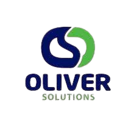

Experiência Profissional
-
OLIVER SOLUTIONS LTDA
Cargo: Analista de TI
Período: 31/08/2023 – 14/05/2025 -
IBÉRIA INDUSTRIAL E COMERCIAL LTDA
Cargo: Analista de Sistemas Jr
Período: 08/04/2021 – 28/08/2023 -
CS TREINAMENTO E INSTALAÇÃO DE SOFTWARE LTDA
Cargo: Técnico em Infraestrutura I
Período: 01/04/2020 – 07/04/2021 -
SOCIEDADE AGRÍCOLA VALE DO CRISTAL S/A
Cargo: Auxiliar de Operador de VANTs
Período: 18/01/2018 – 31/03/2020
Empresas em que Atuei

OLIVER SOLUTIONS LTDA
www.oliversolutions.com.br
www.oliversolutions.com.br
Empresa especializada em transporte de passageiros.
IBÉRIA INDUSTRIAL E COMERCIAL LTDA
www.iberia.com.br
www.iberia.com.br
Indústria, cultivo de cana-de-açúcar e fabricação de açúcar e álcool.
CS TREINAMENTO E INSTALAÇÃO DE SOFTWARE LTDA
www.cscompusoftware.com.br
www.cscompusoftware.com.br
Empresa comprometida com o desenvolvimento de sistemas de gestão de negócios inovadores e eficientes, ajudando empresas de diversos setores a alcançarem desempenho superior.
SOCIEDADE AGRÍCOLA VALE DO CRISTAL S/A
(Site não disponível)
(Site não disponível)
Produtora agrícola voltada ao cultivo e monitoramento de grandes áreas, com uso de tecnologia de drones e VANTs em suas operações.